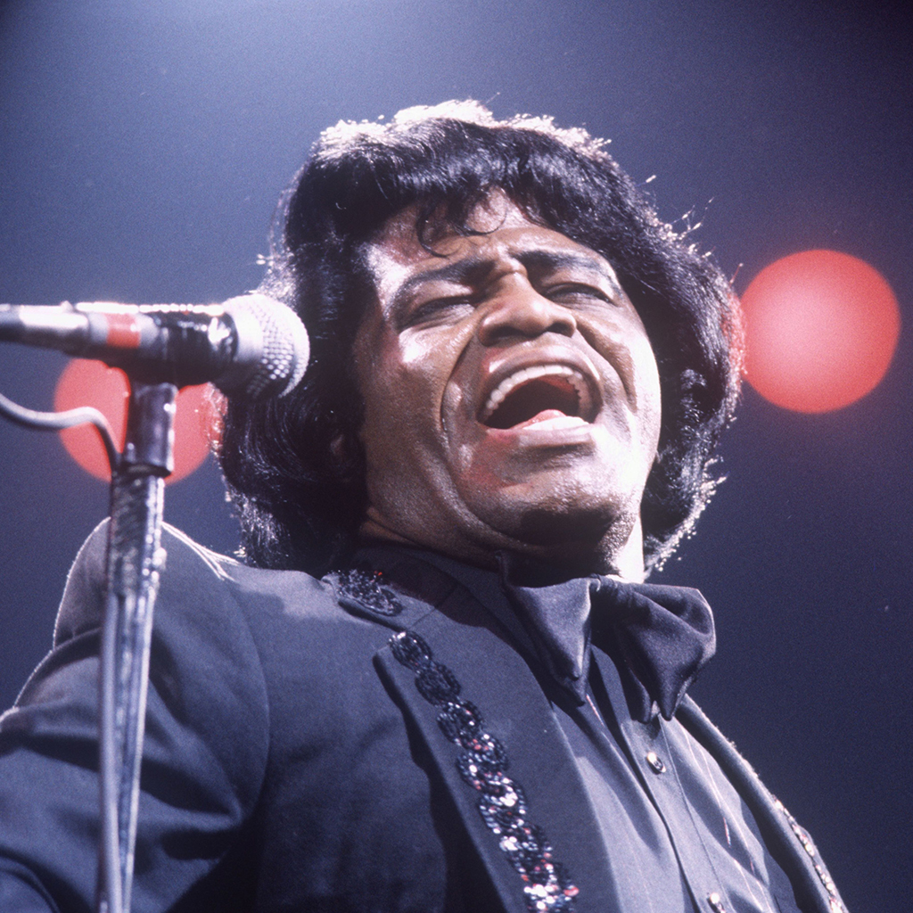

FUNK. The love of my life. Did some b-boying in my younger years and made me love the oldies.
Full name: Nikolaos. Class of '84. Born in northern Greece to a Greek father and an Italian mother. Got the best and worst of both. I have a younger brother who serves as a best friend most of the time even though we are completely different. Fluent in 3 languages: Greek, Italian and English. Proficient cook (this is where you laugh). Jokes aside, i make a MEAN carbonara. I have lived away from home since the age of 18. First Italy (Parma) and then for a short period in Australia (Melbourne). My coding experience started with microcontroller programming in University, using C++ and Assembly and followed by various frameworks and languages. I'm in love with all things Python and would love to see Ruby on Rails get more use in the industry. Microsoft certified for software development fundamentals and have some experience in .NET web development using Entity and other frameworks. Other coding interests include the Unity engine and more recently, blockchain development has got me curious. I'm looking to expand my knowledge with Javascript and learning new ways and frameworks for web development. Seeing a new country is also nice. I would not consider myself a great developer, not even close, but i love challenge, solving problems and i for sure cosider myself better than your average Joe at using google to find what i need, quickly.
In case it wasn't obvious enough, i love music. In collaboration with friends, i play in festivals, parties, rap battles and any occasion really. I've also worked as a studio assistant in a recording studio, organising events, mixing and producing music among other things.
Basketball is my favorite sport. The mind games involved have fascinated me since i was a kid. By no means i'm not a great player but i try my best to have some fun. I know it's not very popular in the Netherlands, but then again, no one's perfect...

This is what i usually do whenever i have some time to kill (sometimes even if i don't). I am probably gaming more than i should but i love almost ANY type of game and those greedy devs dish out so many great titles. I have to show some appreciation, don't you think?
FUNK. The love of my life. Did some b-boying in my younger years and made me love the oldies.
RAP. Everything that revolves around hip hop culture especially 90's era. Not the Lil uzi stuff, PLZ.
Anything really goes. Except for hardcore metal with the growls and everything. I just can't.
Basketball: Panathinaikos BC Superfoods Athens translates to LOVE. 6 stars baby!

Football: Panathinaikos FC 1908. Now you know the reason for the green layout.

Hawthorn Hawks. From my Australian stint. I don't really try to explain in to europeans. Noone gets it.